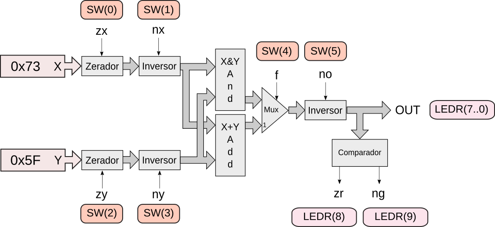

Lab 8: ULA
O objetivo desse laboratório é o de trabalharmos com o controle dos sinais da ULA para entendermos as operações da unidade de processamento do nosso computador. Para isso iremos:
- Executando o simulador
- Controlando ULA para realizar operações específicas (exercícios)
- Programar a FPGA na ULA e realizar operações.
Antes de começar
Vamos atualizar o repositório de vocês com o oficial da disciplina, execute os comandos a seguir no terminal (dentro da pasta do lab):
git remote add upstream https://github.com/insper/bits-e-proc-labs
git fetch upstream
git merge upstream/main
Simulador
Iremos utilizar um simulador da ULA feito em python + Qt. Siga os passos a seguir:
git clone https://github.com/eduardomarossi/z01.1-ula
cd z01.1-ula
pip3 install -r requirements.txt
python3 main.py
Você deve obter a seguinte interface:

Controlando ULA
Com o simulador podemos testar a ULA modificando seus sinais de controle. A seguir uma proposta de operações lógicas que devem ser realizadas na ULA, seus sinais de controle e resultados devem ser anotados nas tabelas.
Para cada exercício, anote a operação no papel e entenda o que está acontecendo.
Exercise 1
Exercise 2
Exercise 3
Exercise 4
Exercise 5
Exercise 6
Exercise 7
(difícil) 8
(difícil) 9
Executando na FPGA
Warning
- Só funciona na VM
- Precisa da FPGA
Podemos executar a ULA na FPGA, para isso iremos disponibilizar o binário da FPGA com a ULA já implementada, o arquivo está dentro da pasta do lab da ula e é chamado de ula/Z011-ULA.sof.
Mas antes de programarmos a FPGA será necessário instalar um pacote python que possui a infra da disciplina, no terminal execute:
pip3 install git+https://github.com/Insper/bits-e-proc-tools
O pacote da disciplina chama bits e ao longo do curso ele será atualizado com novas funcionalidades. Agora iremos usar a de programar FPGA, passando como argumento o HW com a ULA:
$ bits program fpga Z011-ULA.sof
Agora basta controlar as chaves da FPGA e ver o resultado da ULA nos LEDS. Note que as entradas X e Y da ula são fixas em:
- X:
01110011 - Y:
01011111
Repita algumas operações realizados no simulador.
